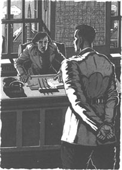
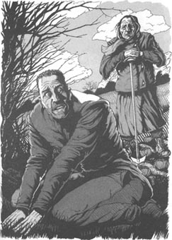
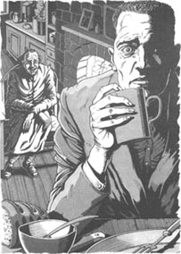
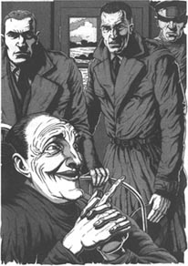
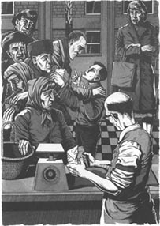
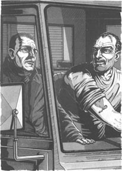
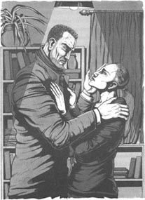
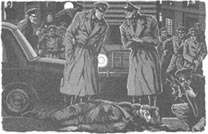
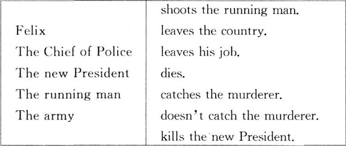
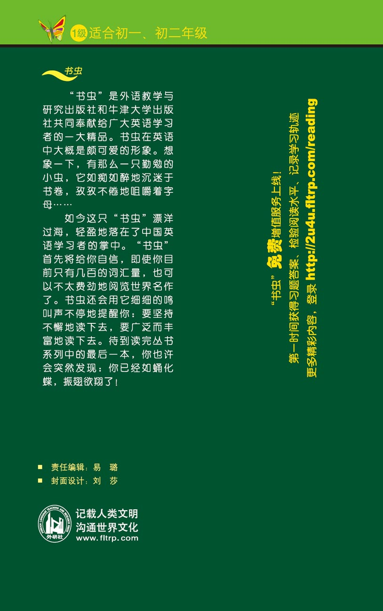

扉页
版权页
京权图字：01-2002-6584
Originally published by Oxford University Press, Great Clarendon Street, Oxford. © 2000 This edition is licensed for sale in the People's Republic of China only and not for export therefrom.
'Oxford' is a registered trademark of Oxford University Press.
只限中华人民共和国境内销售，不包括香港、澳门特别行政区及台湾省。不得出口。
图书在版编目（CIP）数据
谁谋杀了总统？：英汉对照 ／（英）巴西特（Bassett，J.）著；冯彩红译．— 北京：外语教学与研究出版社，2003.9（2014.7 重印）
（书虫·牛津英汉双语读物）
书名原文：The President's Murderer
ISBN 978-7-5600-3674-8
Ⅰ．谁… Ⅱ．①巴…②冯… Ⅲ．英语—对照读物，小说—英、汉 Ⅳ．H319.4:I
中国版本图书馆CIP数据核字（2003）第075362号
出版人： 蔡剑峰
责任编辑：易 璐
封面设计：刘 莎
出版发行：外语教学与研究出版社
杜 址：北京市西三环北路19号（100089）
网 址：http://www.fltrp.com
版 次：2003年9月第1版
书 号：ISBN 978-7-5600-3674-8
* * *
凡侵权、盗版书籍线索，请联系我社法律事务部
举报电话：(010)88817519 电子邮箱：banquan@fltrp.com
法律顾问：立方律师事务所 刘旭东律师
中咨律师事务所 殷 斌律师
内容简介
内容简介
一个好警察总是在问问题。发生了什么？为什么会发生？谁干的？什么时候？在哪儿？为什么？一个好警察也知道哪些回答是正确的，哪些是错误的。
费利克斯是个好警察。警长要他去抓一个谋杀犯，一个很重要的谋杀犯——他谋杀了总统。费利克斯必须迅速地找到凶手，并把他带回来——不论是死是活。他夜以继日地工作，开着车在这个国家来回奔波，也问了很多问题。
但是有些问题是很危险的，最好不要知道答案。而死人，当然了，既不会问问题，也不能回答问题……
THE PRESIDENT'S MURDERER
THE PRESIDENT'S MURDERER
A good policeman is always asking questions. What happened? Why did it happen? Who did it? When? Where? Why? And a good policeman knows which answers are right, and which are wrong.
Felix is a good policeman, and the Chief of Police wants him to find a murderer. A very important murderer—the man who murdered the President. Felix must find the murderer quickly and bring him back—dead or alive. He works day and night, drives up and down the country, and asks a lot of questions.
But some questions can be dangerous. It is better not to know the answers. And dead men, of course, cannot ask, or answer, questions...
目录
The First Day
The First Day
'Run!' the man thought. 'Move! Faster! I can't stop now.'
Over the man's head the night sky was black and cold, and in front of him were the trees. Tall, dark trees... five hundred metres away.
'I can hide there,' the man thought. 'I can hide in those trees. They can't see me in the trees.'
He looked behind him. He could see the lights. There were five or six men. They ran fast, and their lights moved up and down. They were not far away now. He could hear their feet on the ground.
The man ran faster. His legs were tired, his body was tired. There were noises in his head, he could not see. The trees were two hundred metres away. He wanted to stop running. He wanted to lie down and sleep.
Then he heard a new noise. Dogs.
'They've got dogs!' he thought. 'Oh no! Not dogs! I can't run faster.'
But he did. Faster and faster. The trees were a hundred metres away... fifty... twenty...
And then he was there. The trees opened their dark arms to him. But he did not stop running. It was dark and quiet under the trees. He ran first to the left, and then to the right. He came to a hill, and for a second or two he stopped and listened.
Nothing. Then he heard the dogs again, but he could not see the lights.
'Don't stop now,' he thought. 'Dogs don't need eyes. They can find you in the dark.'
Quickly he ran down the hill. It was very dark here, and he could not see very well. He ran into a tree and nearly broke his arm.
'Careful!' he thought. 'Careful.' He put his hands out in front of him, and ran more slowly. Then he heard a new noise. Water.
'A river!' he thought. 'The dogs can't follow me across water. Where is it? Quick!'
Soon he found the river. It was not very big, but it ran quickly. The water was cold on his tired legs. He walked and ran up the river, through the water, for about two kilometres. Then he stopped and listened again.
He could hear nothing. He stood there and waited. The trees watched him with dark, secret eyes.
Nothing. No dogs, no lights, no noises.
The man was cold now, and very, very tired. 'I need sleep,' he thought. 'Where can I hide?' He looked up at the trees.
'Up there,' he thought. 'The dogs can't follow me up a tree.'
He found a tall tree and went up it. He could not see the ground now. He half-sat, half-stood in the tree, and listened. Nothing.
'An hour,' he thought. 'Sleep for an hour. Then go on. Go south. Hide in the day, and move at night. I can get there in five days, perhaps six.'
The man put his head down on his arms, and slept.
* * *
'What are you saying? You lost him?' the Chief of Police said angrily.
The young police inspector in front of her was tired. Very tired. He wanted to sit down, but people did not sit down in the Chief's office. They stood and waited, and perhaps the Chief said 'Sit down'. Then they sat down—but not before.
So the inspector stood. 'I'm sorry, Chief,' he said. 'We couldn't find him in the trees. We looked all night, but it was dark and...'
The Chief of Police put her hands on the desk in front of her. 'You had five men with you, Inspector, and two dogs. And you couldn't find him!'
Eva Hine, the Chief of Police, was a tall woman of about fifty. Her eyes were grey and very cold. Dangerous eyes. When Eva Hine said 'Jump!', people jumped. They did not ask questions first.
The inspector waited, and the Chief of Police looked at him coldly. 'What are you waiting for?' she asked. 'Go out and find him! Three months ago this man—Alex Dinon—killed the President of our country. He's a murderer—a dangerous man. Twenty-four hours ago he escaped from prison, and our new President wants him back in prison—today! Now! At once!'

The inspector quickly left the room.
His name was Felix, and he was thirty-three years old. That was young for an inspector, but he was a good policeman. He liked his job, and worked long hours, but he was sometimes afraid of Eva Hine, the Chief of Police.
Ten minutes later he was back in his office, and Adam came into his room. Adam was twenty-five, and usually worked with Felix on important jobs.
'What did the Chief say?' Adam asked.
'Find Dinon quickly,' Felix said. 'So, let's begin. Have we got photographs of Dinon? And what about his family?'
Adam put some photographs on the desk. 'He's got a wife and two young children,' he said.
'Right. I want photographs on television and in all the newspapers. Four men can watch his house and family, day and night—four hours on, and four hours off. Next, I want policemen at all the airports and...'
Telephones rang, and people came and went in the office. Felix and Adam worked on, late into the night.
in front of prep. before. 在……前面。
hide v. prevent from being seen. 隐藏，隐蔽。
noise n. sound, esp. when it's loud and confusing etc. 响声，噪音。
run into collide with or crash into sb. /sth. 撞到某人或某物的身上。
secret adj. not known by others. 秘密的。
look up raise one's eyes. 抬头看，仰视。
follow v. come or go after. 跟在……的后面。
inspector n. a police officer. 警员。
grey adj. of the colour between black and white. 灰色的。
dangerous adj. Likely to cause danger. 危险的。
president n. head of state. 总统，国家主席。
murderer n. a person guilty of murder. 谋杀犯，凶手。
escape v. get free. 逃脱，逃走。
important adj. very serious and significant. 重要的，重大的。
第一天
第一天
“跑！”那人想，“跑！再快点儿！我现在不能停下。”
在那人的头顶上方，夜空漆黑一片，寒气逼人。他的前面是树林，高高的，黑压压的树……足有500米远。
“我可以藏在那儿。”那人想，“我可以藏在树林里，那样的话，他们就看不到我了。”
他回头看了看。他能看到灯光，还有五六个人。他们跑得很快，手里的灯上下扫着。现在，他们已经离他不远了。他甚至能听到他们的脚步声。
那人跑得更快了。他的腿很累，有点体力不支。他的脑袋里充斥着各种声音，什么也看不见。树林只有200米远了。他想停下来，想躺下，睡上一觉。
正在这时，他听到另外一种声音。狗。
“他们带狗了！”他想，“噢，不！可别是狗，我没法跑得更快了。”
但是他做到了，他跑得越来越快。树林在100米的远处……50米……20米……
他终于跑到了。树林向他张开了黑色的臂膀。但他没有停下来。树底下很暗，也很安静。他先跑到左边，又跑向右边。他来到了一座小山丘前，在那里停了一两秒钟，听听有无动静。
什么也没有。而后他又听到了狗的叫声，却看不到灯光。
“现在不要停下。”他想，“狗不需要眼睛，它们能在黑暗中找到你。”
他很快地跑下了山丘。这里非常暗，他看不太清楚。他撞到了一棵树上，险些折断了胳膊。
“小心！”他心里想，“小心。”他把双手向前伸去，跑得稍微慢了一些。这时，他又听到一种声音。流水声。
“一条河！”他想，“那些狗追不到河对面。河在哪儿？快点！”
他很快找到了河。河不大，水流却很急。河水冰冷冰冷的，没过了他疲惫的双腿。然后，他涉水向河的上游走着、跑着。走了大约两公里之后，他停下来，又听了听。
他什么也没有听到。他站在那儿，等待着。那些树，用黝黑的眼睛，偷偷地注视着他。
什么也没有。没有狗，没有灯光，也没有声音。
他现在觉得很冷，而且精疲力竭。“我需要睡觉。”他想，“我能藏在哪儿呢？”他抬头看看树。
“就藏在那上面，”他想，“狗总不能跟着我上树吧。”
他找到了一棵高大的树，爬了上去。现在，他看不到地面了。他在树上半蹲着，听着。什么动静也没有。
“一个小时，”他想，“就睡一个小时。然后继续走。朝南走，昼伏夜行。五天后我就能到那儿了，也许要六天吧。”
那人把头支在胳膊上，睡了。
* * *
“你说什么？你让他跑了？”警长生气地说。
站在她面前的年轻警员看起来很疲惫，非常的疲惫。他想坐下，但是没有人敢在警长的办公室里坐下。他们站着，等待着，也许警长会说“坐下”，然后他们才坐下——而不是在警长发话之前。
因此，警员一直站着。“对不起，警长，”他说，“我们在树林里找不到他，我们找了整整一个晚上，但是光线太暗，而且……”
警长把手放在她身前的办公桌上。“警员，你带了五个人，还有两条狗。而你竟然找不到他！”
伊娃·海因警长是个大约50岁的高个子女人。她长着一双灰色的眼睛，目光冷峻。危险的眼睛。要是伊娃·海因说“跳！”，大家就会跳，事先什么也不问。
警员等待着，警长冷冷地看着他。“你还等什么？”她问，“出去找他！三个月前，这个人——亚历克斯·迪农——杀害了我们国家的总统。他是个谋杀犯——一个危险的人物。24小时前，他从监狱逃走了，而我们的新总统要求把他抓回来——就在今天！现在！立刻去办！”
警员很快地离开了。
他的名字叫费利克斯，33岁。这样的年龄，对于一个警员来说还很年轻，但他是一个好警察。他喜欢自己的工作，而且经常长时间地工作。但是，他有时惧怕伊娃·海因警长。
十分钟后，他回到了自己的办公室，亚当也走了进来。亚当25岁，常常和费利克斯在重要的案件上合作。
“警长怎么说？”亚当问。
“立刻抓获迪农。”费利克斯说，“所以，我们开始吧。咱们有迪农的照片吗？他的家庭情况怎样？”
亚当把几张照片放在桌子上。“他有一个妻子和两个年幼的孩子。”他说。
“好的。把这些照片登在电视和各种报纸上。派四个人轮班全天候地监视他的家和家人——四个小时轮一班。然后，在所有的机场都安排上警察，还有……”
电话响了。人们从办公室里进进出出。费利克斯和亚当一直工作到深夜。
The Second Day
The Second Day
The next morning Alex Dinon was forty kilometres south of the prison. He moved quickly and stayed away from towns and villages. It was winter and the weather was cold, so there were not many people in the fields. He looked behind him often, but nobody saw him and nobody followed him.
At midday he found a quiet field and lay down under some small trees. He slept at once.
At about three o'clock Alex opened his eyes, and saw an old woman in front of him.
'What are you doing in my field, young man?' she said.
Alex sat up quickly. 'I'm sorry,' he said. 'I was tired, and needed some sleep. I'm going now.'
'You're very dirty,' the old woman said. 'Look at you! Where are you going?'
'North,' Alex said. He stood up and began to move away.
'Don't run away. I'm only an old woman.' She looked at him carefully. 'You're dirty, and hungry, and tired... and afraid. Am I right?'
Alex smiled slowly. 'Yes,' he said.
'Well, come back to my house and have some food. And you can have some of my husband's old clothes. He died last winter.'

Alex looked at her. It was true. He was hungry and tired and dirty. And afraid... but not of this old woman. 'Thank you very much,' he said.
The old woman's name was Marta. Her house was very small, but she put some wonderful hot food in front of Alex. He ate quickly, and Marta watched him.
'Oh, you were hungry,' she laughed.
Alex smiled, but did not stop eating.
Marta found some old clothes for him, and then made some coffee. She said nothing, but watched him with a smile. Alex finished eating and drank some coffee. He began to feel better.
'How did you escape from prison?' Marta asked suddenly.
Alex's face went white. He stared at Marta and said nothing.
Marta laughed. 'It's all right,' she said. 'I'm not afraid of the President's murderer. You can stay here tonight, Alex Dinon, and have a good sleep. I don't like the police, and I'm not going to tell them.'
* * *
Felix and Adam did not get much sleep. They stayed in the office and slept between telephone calls. The phones rang often, but in the morning there was no news of Alex Dinon. The day went slowly. The phones rang again and again—but there was no news.

'Where is he? What's he doing?' Felix said to Adam. 'He's hiding—perhaps with friends.'
'We questioned all his friends early this morning,' Adam said. 'They said nothing.' He looked at Felix. 'Can we bring some of them in here? With their wives. Then we can ask more... difficult questions. Somebody usually talks then.'
'No,' Felix said coldly. 'That's not right, and you know it. Dinon can't get out of the country now. But we need to find him today. The Chief isn't going to be very happy.'
Late in the afternoon the Chief of Police telephoned. 'Come to my office in half an hour,' she told Felix.
Felix felt tired and dirty. He quickly drank some black coffee, and changed his shirt. Twenty minutes later he stood in front of Eva Hine's desk.
She did not smile, but looked at Felix and waited.
'The police are looking for Dinon in every town and village,' Felix said quickly. 'We're watching the roads and the airports, and the houses of his family and friends...'
'Sit down, Inspector, and listen,' the Chief said. 'We need to find this man quickly. The President is not happy. You're a good policeman, Inspector, and this is an important job for you.'
'Chief,' Felix began. 'How did Dinon escape from prison?'
'That's not important now,' the Chief said.
'But perhaps he had friends in prison,' Felix said. 'Perhaps they know something. I need to talk to people at the prison.'
'Well, you can't,' the Chief said.
The telephone rang on the Chief's desk. She picked up the phone. 'Eva Hine here.' Then she smiled. 'Yes, Mr President,' she said. She listened for a minute or two. 'Yes, of course, Mr President. I understand. Yes. Goodbye.'
Eva Hine put the phone down and looked at Felix angrily. 'Forget Dinon's escape from prison. Get out there and find him. And bring him back dead or alive!'
At the door Felix turned and looked at her. 'Dead?' he asked slowly.
'Dead men can't talk. Now go!'
Felix walked slowly back to his office. There were a lot of questions in his head, and he did not know the answers. 'Why can't I talk to people at the prison?' he thought. 'What did the President say to the Chief on the phone? And why does she want Dinon dead? He went to prison because he murdered the old President. Everybody knows that. What can he talk about... now?'
dirty adj. not clean. 脏的，不干净的。
hungry adj. feeling a desire for food. 感到饿的，饥饿的。
wonderful adj. very good. 极好的。
stare v. Look with eyes wide open. 瞪着眼睛看，盯着。
question v. ask questions. 问问题，提问。
drink v. take ( liquid ) into the mouth and swallow. 喝，饮用。
pick up take hold of. 拿起。
understand v. grasp the meaning. 懂，明白。
forget v. fail to remember. 忘记，忘掉。
第二天
第二天
第二天早上，亚历克斯·迪农已经在监狱南面40公里的地方了。他避开城镇和村庄，走得很快。时值冬日，天气寒冷，所以田地里人不多。他不时地回头看看，但是没有人看到他，也没有人跟着他。
中午时分，他找到了一块安静的田地，在一片小树丛下躺下了。他很快就睡着了。
大约3点钟时，亚历克斯睁开了眼睛，看到一个老太太站在他面前。
“你在我的地里干什么，年轻人？”她问。
亚历克斯立刻坐了起来。“对不起，”他说，“我很累，需要睡一会儿，我马上就走。”
“看看你，浑身上下脏兮兮的。”老太太说，“你要去哪儿？”
“去北边。”亚历克斯说。他站了起来，要走。
“别走，我只不过是一个老太太。”她仔细地打量他，“你浑身脏兮兮的，又饿又累，……还很恐惧。我说得对吗？”
亚历克斯慢慢地笑了。“不错。”他说。
“那好吧，来我家吃点东西。你可以换上我丈夫的旧衣服，他去年冬天过世了。”
亚历克斯看着她。她说得不假。自己又饿又累，浑身脏兮兮的。还很恐惧……但并不是害怕这个老太太。“太谢谢您了。”他说。
老太太名叫玛尔塔。她家的房子不大，但她却弄了些香喷喷、热腾腾的饭菜，放在亚历克斯的面前。他狼吞虎咽地吃着，玛尔塔看着他。
“噢，你真是饿坏了。”她笑了。
亚历克斯也笑了，但是嘴没停。
玛尔塔给他找来几件旧衣服，又端来了咖啡。她默默地看着他，脸上挂着微笑。亚历克斯吃完饭后，又喝了些咖啡。他开始感觉好一点了。
“你是怎样从监狱里逃出来的？”玛尔塔突然问。
亚历克斯的脸“唰”地白了。他看着玛尔塔，一言不发。
玛尔塔笑了。“没事的，”她说，“我不害怕什么谋杀总统的凶手。今晚你就住在这儿吧，亚历克斯·迪农，睡个好觉。我讨厌警察，也不会去报案的。”
* * *
费利克斯和亚当几乎没怎么合眼。他们待在办公室里，没电话时就打一会儿瞌睡。电话铃老是响个不停，到早上的时候，还是没有亚历克斯·迪农的消息。一个白天慢慢地过去了。电话铃响了又响——但仍旧没有消息。
“他在哪儿？他在干什么？”费利克斯问亚当，“他藏起来了——也许和朋友们在一起。”
“我们今天上午早些时候问过了他所有的朋友，”亚当说，“他们什么也不说。”他看看费利克斯，“我们把他的几个朋友带到这儿来行吗？还有他们的妻子。然后我们可以问一些更……难的问题。那时，就会有人说话了。”
“不，”费利克斯冷静地说，“那不行，你是知道的，迪农现在还逃不出这个国家，今天我们要找到他。否则，警长会不高兴的。”
下午晚些时候，警长打电话过来。“半个小时后来我的办公室。”她对费利克斯说。
费利克斯觉得很累，而且身上很脏。他很快地喝了些黑咖啡，换了件衬衣。20分钟后，他已经站在伊娃·海因的办公桌前了。
她板着脸，看着费利克斯，等他说话。
“警方正在城镇和村庄里到处搜捕迪农。”费利克斯语速很快，“我们正在监视道路、机场、他的家以及他的朋友……”
“坐下吧，警员，听着，”警长说，“我们要很快地抓住这个人。总统不高兴了。你是个好警察，警员。这项工作对你来说很重要。”
“警长，”费利克斯开始问，“迪农是怎样从监狱里逃走的？”
“现在这个并不重要。”警长说。
“但是，也许他在监狱里有朋友，”费利克斯说，“他们可能会知道一些情况。我要和监狱里的人谈一谈。”
“嗯，这不行。”警长说。
警长办公桌上的电话响了。她拿起电话。“我是伊娃·海因。”接着她笑了，“是的，总统先生。”她说。她又听了一两分钟，“是的，当然，总统先生。我明白。好的，再见。”
伊娃·海因把电话放下，怒气冲冲地看着费利克斯。“别管迪农是怎么从监狱里逃跑的吧。快出去找他。不管是死的还是活的，都要把他抓回来！”
走到门口的时候，费利克斯回过头来，看着她。“死的？”他小心地问。
“死人不会讲话。现在就去！”
费利克斯慢腾腾地走回他的办公室。他的头脑里充斥着很多问题，却找不到答案。“我为什么不能和监狱里的人谈谈？”他想，“而总统在电话里又对警长说了些什么呢？她为什么要迪农死呢？他入狱是因为他谋杀了前总统，这是人人皆知的，他又能说出些什么呢……现在？”
The Third Day
The Third Day
Alex slept well for many hours, and the next morning Marta put a big breakfast on the table. Alex ate hungrily, and Marta talked.
'What's happening to this country?' she said. 'I don't know. I didn't like the old President. He was old and stupid. There's never much food in the shops. When did I last eat some good meat?' she said angrily. 'I work every day, and what do I get? Nothing!'
'What do you think about the new President, then?' Alex asked.
'Oh, he's worse! He's a younger man, and he's not stupid, but he's more dangerous. He's very friendly with the police and the army. And he's putting a lot of people in prison. That's not good for the country. We want more food, not more prisoners.'
Just then they heard somebody at the door.
'Quick!' Marta said. 'Upstairs. Hide under the bed.'
Alex ran upstairs and hid. Three minutes later Marta came quickly upstairs. Her face was very angry.
'That was my friend George from the house down the road. Somebody saw you at the window this morning. It was that woman from the post office. The police give her money, and she tells them all the secrets of the village. Everybody hates her!'
'The police always have a "friend" in every village,' Alex said sadly. 'Marta, I'm going now. At once. The police are going to be here soon, and...'
'Huh!' Marta said angrily. 'I'm not afraid of the police or their questions. Alex Dinon? Who's he? Is he somebody on television?'
Alex smiled. 'You're a wonderful woman, Marta,' he said. 'Goodbye, and thank you.'
Marta looked at Alex and her old face was suddenly unhappy. 'Good luck, boy,' she said.
Alex left the house quickly. He went through Marta's back garden, and out into the fields again. He felt better after the night in Marta's house. He thought about Marta and smiled. Boy! He was thirty-three years old and a "dangerous murderer", but to Marta he was only a tired and hungry boy.
* * *
At eight ο'clock in the morning of the third day the telephone rang on Felix's desk. Felix listened, then put the phone down quickly.
'Adam!' he shouted. 'We've got him! He's in a village up north. In an old woman's house. Come on. Let's go!'
The big police car was fast, and the kilometres went quickly. Adam was tired and wanted to sleep, but Felix wanted to talk. 'I saw the Chief again last night,' he said. 'She's getting angry. I was in her office and the President phoned her. They want Dinon badly—dead or alive. Why do they want him dead?'
'I don't know,' Adam said. 'Let's find him first.'
In Marta's village a policeman stood at the door of her house. 'We looked all through the house, and there's nobody in there,' he said. 'Only Marta, the old woman. And she's not talking.'
Felix, Adam and the policeman went into the house. 'Hello!' Marta said. 'More policemen? What an exciting day!'
'Listen to the Inspector,' Adam said angrily. 'He wants to ask you some questions.'
Felix sat down and smiled at Marta. 'Now, Marta,' he said. 'Somebody saw a young man in your house yesterday. Who was he, Marta, and where did he go?'
'He was my sister's youngest son,' Marta said happily. 'He's a very nice boy.'
The policeman whispered in Felix's ear. Felix looked sadly at Marta. 'Your sister and all her family live in Australia, Marta. Who was the man in your house?'
'Oh dear!' Marta said. 'I'm an old woman, you know. Seventy-two last month. I forget things very easily. In Australia, did you say?'
Felix asked question after question, but Marta told him nothing. Sometimes the young man in her house was her sister's son. Sometimes he was the young doctor from the next village, but he was never Alex Dinon, the President's murderer. Adam got very angry and whispered to Felix：
'Can I ask the questions?'
'No,' Felix said. He did not like Adam's questions. He stood up and moved to the door, but Marta now wanted to ask him a question：
'And why do you work for the police, young man? The police always put the wrong people in prison, you know.'
'Marta,' Felix said tiredly, 'Alex Dinon is a murderer. He murdered—'
'Oh, I know that,' Marta said. 'The newspapers said that. But newspapers and the television never tell us the true story. Alex Dinon isn't a murderer. He's a nice young man.'
'A nice young man?' Felix said quickly. 'How do you know that?'
'He's got a nice face. That's why. I saw his picture on the television. I'm an old woman and I can read people's faces.'
'So who did murder the President, then?' Felix asked.
'I don't know,' Marta said. 'You're the policeman. You go and find the murderer. But I can tell you one thing. You can begin with the new President. He's got a murderer's face.'
Adam said angrily, 'That's dangerous talk.'
Marta laughed, and Felix opened the door. 'Let's go, Adam,' he said quietly.

Out in the road Adam said, 'Stupid old woman!'
'Yes,' Felix said. 'Perhaps she was... and perhaps she wasn't.'
stupid adj. foolish. 笨的，愚蠢的。
friendly adj. of a relationship in which people treat each other as friends. 和睦的，融洽的。
hate v. strongly dislike. 讨厌，厌恶。
unhappy adj. sad or miserable. 悲伤的，难过的。
suddenly adv. quickly and unexpectedly. 突然地。
come on hurry up. 快点儿。
badly adv. very much. 非常地。
whisper v. speak softly in a Low voice. 低语，小声说。
wrong adj. mistaken, not correct. 错误的。
murder v. kill unlawfully and intentionally. 谋杀。
第三天
第三天
亚历克斯睡了好几个小时，睡得很香。次日早上，玛尔塔把一顿丰盛的早餐摆在了桌子上。亚历克斯狼吞虎咽地吃着，玛尔塔则和他说话。
“这个国家发生了什么事？”她说，“我不知道。我不喜欢前任总统，他既老又蠢。商店里从来都没有多少吃的东西可供应，我上次吃的那些肉真是美味，哎，那是什么时候的事了呢？”她愤怒地说着，“我每天干活，但是我得到了什么呢？一无所有！”
“那你觉得新总统怎样？”亚历克斯问。
“唉，他更糟糕！他年轻一点儿，也不蠢，却更阴险。他同警察和军队关系暧昧，他把很多人都关进了监狱。这对这个国家可没什么好处，我们需要的是更多的食物，而不是囚犯。”
正在这时，他们听到门口有人。
“快！”玛尔塔说，“上楼去，藏在床底下。”
亚历克斯跑到楼上，藏了起来。三分钟后，玛尔塔很快地上楼来了。她看起来怒气冲冲。
“是我的朋友乔治，他就住在路那头的那所房子里。今天早上，有人看见你站在窗口边。是邮局的那个女的。警察给了她钱，她就把村里所有的秘密都告诉给他们。所有的人都恨她！”
“在每一个村庄，警察都会有一个‘朋友’。”亚历克斯悲哀地说，“玛尔塔，我要走了，现在就走，警察马上就要来了，还有……”
“哼！”玛尔塔愤怒地说，“我才不怕警察或者他们的盘问呢。亚历克斯·迪农？他是谁？是个电视上的人物？”
亚历克斯笑了。“你真是个了不起的女人，玛尔塔！”他说，“再见，谢谢你！”
玛尔塔看着亚历克斯，她那苍老的脸突然变得神色凝重。“祝你好运，孩子。”她说。
亚历克斯很快地离开了。他穿过玛尔塔的后花园，又走到了那片地里。在玛尔塔家休息了一个晚上之后，他感觉好多了。他想到玛尔塔时，笑了。孩子！他已经33岁了，而且是个“危险的谋杀犯”，但是在玛尔塔眼里，他只不过是个饥困交加的孩子。
* * *
第三天早上8点钟，费利克斯办公桌上的电话响了。费利克斯接听着，很快就把电话放下了。
“亚当！”他喊道，“我们找到他了！他在北部的一个村子里，在一个老太太家。快点儿，咱们走！”
大警车呼啸而过，不一会儿已经跑过了好几公里。亚当觉得很累，想睡觉，但费利克斯却要和他说话。“我昨晚又见到警长了，”他说，“她很生气。我在她的办公室的时候，总统来了电话。他们急切地要抓住迪农——不管是死是活。他们为什么想让他死呢？”
“我也不知道，”亚当说，“我们还是先找到他吧。”
在玛尔塔居住的那个村庄，一个警察站在她的家门口。“我们搜查了整个房子都没找到人。”他说，“只有玛尔塔一个人，就是那个老太太。而她什么也不说。”
费利克斯、亚当和那个警察走进了房子。“你们好！”玛尔塔说，“又多了几个警察！今天真令人兴奋！”
“听警员问话，”亚当怒气冲冲地说，“他有问题要问你。”
费利克斯坐了下来，冲玛尔塔笑了笑。“好，玛尔塔，”他说，“昨天有人看到你的房子里有一个年轻人，他是谁，玛尔塔？他去哪儿啦？”
“他是我妹妹的小儿子，”玛尔塔开心地说，“他真是个不错的孩子。”
那个警察对费利克斯耳语了些什么。费利克斯忧郁地看着玛尔塔。“你妹妹全家都住在澳大利亚，玛尔塔。在你房子里的那个人到底是谁？”
“噢，天哪！”玛尔塔说，“你看，我老啦。我上个月就72岁了，动不动就忘事儿。你说他们在澳大利亚？”
费利克斯一个问题接着一个问题地问，但是玛尔塔什么也没告诉他。一会儿说她房子里的年轻人是他妹妹的儿子，一会儿又说他是邻村的年轻医生，反正永远不会是亚历克斯·迪农，那个谋杀总统的凶犯。亚当非常生气，对费利克斯耳语道：
“我可以问些问题吗？”
“不行。”费利克斯答道。他不喜欢亚当的问题。他站起身来向门口走去，但是玛尔塔却要问他一个问题：
“年轻人，你为什么要当警察？你知道，警察总是把不该抓的人关进监狱。”
“玛尔塔，”费利克斯疲惫地说，“亚历克斯·迪农是个杀人犯，他谋杀了——”
“哦，这我知道，”玛尔塔说，“报纸上登了。但是报纸和电视从来不会告诉我们事实的真相。亚历克斯·迪农不是杀人犯，他是一个不错的年轻人。”
“一个不错的年轻人？”费利克斯很快地反问道，“你怎么知道？”
“他的脸很友善，就因为这个。我在电视上看到了他的照片。我是一个老太太，活了这么多年，能够读懂人的脸。”
“那么到底是谁谋杀了总统呢？”费利克斯问。
“我不知道。”玛尔塔说，“你是警察，你去抓那个谋杀犯。但是我可以告诉你一件事情。你可以从新总统开始查，他长了一张谋杀犯的脸。”
亚当恼怒地说：“这么讲话可是很危险的。”
玛尔塔笑了，费利克斯打开门，“咱们走，亚当。”他平静地说。
在外面的路上，亚当说：“这个愚蠢的老太婆！”
“是呀，”费利克斯说，“也许她很蠢……但也许她一点儿也不蠢。”
The Fourth Day
The Fourth Day
After he left Marta's village, Alex moved quickly and quietly across the fields. Nobody saw him. He walked and ran, and walked again. It rained all day and all night. He walked through the night, and the next morning—the fourth day—he was very tired and very hungry. He hid in some trees for an hour or two, then he went on south. Always south. To his home town.
'Where can I go?' he thought. 'Perhaps I can escape from the country, but I want to see Olivia again before I leave... or before the police find me.'
But first he needed food. He had some money in his pocket—Marta's money. He remembered her words. You take it. I don't need it. An old woman doesn't need money. Alex smiled. What a wonderful old woman!
He came to a small town on a river, and found a food shop in a quiet street. He opened the door and went in. There were a lot of people in the shop, and he waited quietly behind them. People looked at him, and a man went out quickly. Alex wanted to run, but he was very hungry, so he waited. Then a woman with her young son came into the shop. The woman whispered to the boy, and the boy came up to Alex. 'There are two policemen in the street,' he said very quietly, 'and they're coming here.'

Alex looked quickly at the door, but he could not escape now. Then the shopkeeper called to him, 'Hey, you!' he said. 'Quick! Go out through the back.'
Alex ran through the back of the shop, and the shopkeeper followed him. 'I never help the police—they're all bad,' he said. He opened the back door and looked out. 'It's OK,' he said quickly. 'You can get out of town along the river. Follow the back of the houses. Nobody goes there. Good luck!'
'Thank you,' Alex said, and ran.
Three kilometres from the town Alex came to a road. He crossed the road quickly but a lorry came along at the same time. The lorry slowed down and the driver called out to him, 'Where are you going?'
Alex said the name of his home town, and the driver said, 'Come on. I'm going near there. You can come with me.'
Alex got into the front of the lorry, and the driver looked carefully into his face. 'Do I know you?' he asked.
Alex said nothing, and waited. He felt very tired. The driver stared at him for a minute, then he smiled. 'No, I don't know you,' he said. 'Get into the back of the lorry. Nobody can see you there. Are you hungry?'
'Yes, I am,' Alex said. 'Very.'
'Well, I've got some sandwiches. Here you are. Now, get in the back quickly. Before we see a police car.'

The lorry drove slowly south. Alex ate all the driver's sandwiches and then slept like a dead man.
* * *
'We're always three hours or more behind him,' Felix said to Adam in the car. 'We drive up and down the country, but Dinon always moves on before we get there.'
'Perhaps this shopkeeper can tell us something,' Adam said.
But the shopkeeper was not helpful. 'Alex who?' he said.
'DINON!' Felix shouted. He was very tired. 'He escaped from prison five days ago. Somebody saw him in your shop.'
'I don't have prisoners in my shop,' the shopkeeper said angrily. 'And I don't want the police here.'
'Did Dinon come into this shop?' Felix asked.
'Dinon,' the shopkeeper said slowly. 'What did he do? Wait a minute. Yes! Did he write a book about the old President?'
'He killed the President,' Adam said. 'He murdered him.'
'Oh yes,' the shopkeeper said. 'I remember now. It was a good book. But the President's murderer did not come into my shop this morning.'
Felix watched the shopkeeper's face carefully. 'My question', he said, 'asked about Alex Dinon.'
The shopkeeper looked at Felix and smiled slowly. 'That's right,' he said.
Felix and Adam talked to a lot of people and asked a lot of questions in that small town, but they learned nothing.
Later, back in the office, Felix was very quiet. Suddenly he looked at Adam across the desk, and said:
'We can't get Dinon's book in this country. Do you know it, Adam?'
'No,' Adam said.
Felix stared at the telephone on his desk. 'Where is Dinon?' he said slowly. 'People are helping him, but why? He's a murderer. And nobody wants to help us.'
'People never help the police in this country,' Adam said. 'People don't like us.'
'Why are we policemen, Adam?'
'It's a good job,' Adam said. 'And the money's good.'
After a minute or two Felix said, 'Did Dinon murder the President? What do you think, Adam?'
'Well, why did they put him in prison, then?'
'That doesn't answer my question,' Felix said.
'I do my job,' Adam said, 'and I don't ask questions.'
Felix looked at him, but said nothing.
go on continue. 继续做。
remember v. have or keep in the memory. 记住，记着。
shopkeeper n. person who owns a shop. 店主。
lorry n. truck. 卡车。
sandwich n. two or three pieces of bread with meat or cheese between. 三明治。
helpful adj. giving help,useful. 有用的，有帮助的。
learn v. become aware of. 获悉，得知。
第四天
第四天
离开了玛尔塔的村庄，亚历克斯走得很快，他悄悄地穿过了田地。没有人看到他。他走一会儿跑一会儿，然后又继续走。雨下了一天一夜，他在夜色中穿行。到第二天早上——那是他逃出来的第四天了——他真是又饥又乏。他在一片树丛里躲了一两个小时，然后又继续向南走。一直朝南走，就能到他的家乡。
“我能去哪儿呢？”他想，“我也许能逃离这个国家，但走之前我想再见奥利维亚一面……或者说是在警察抓住我之前。”
但是首先他得吃点什么。他口袋里有些钱——是玛尔塔给他的。他记起她的话：你拿去吧，我不需要，一个老太太不需要什么钱的。亚历克斯笑了。一个多好的老太太！
他来到河边的一个小镇上，在一条安静的街道上找到了一家食品店。他打开门，走了进去。店里人很多，他静静地排在他们后面等着。人们看着他，一个男人很快地出去了。亚历克斯想跑，但是他很饿，所以只好等着。随后一个女人带着她的小儿子进了商店。这个女人悄悄地对她的孩子说了些什么，小男孩儿朝亚历克斯走过来。“街上有两个警察，”他悄悄地说，“他们正在往这儿赶。”
亚历克斯立刻看看门口，但是他现在已经逃不掉了。这时，店主对他喊道：“嗨，你！”他说，“快！从后面出去。”
亚历克斯穿过食品店的后面，店主跟着他。“我从来不帮警察——他们都是坏蛋。”他说。他打开后门，向外看了看。“没事儿，”他说得很快，“你可以沿着河出镇，顺着房后走。没人去那些地方。祝你好运！”
“谢谢你。”亚历克斯说，然后就跑走了。
跑出小镇三公里，亚历克斯来到了公路上。他很快地穿过公路，但是一辆卡车也在这时开了过来。卡车慢了下来，司机对他喊：“你要去哪儿？”
亚历克斯说出了他家乡小镇的名字，司机说：“快点儿。我正要到那儿附近去，你可以和我一块儿去。”
亚历克斯进了驾驶室，司机仔细地打量他的脸。“我认识你吗？”他问。
亚历克斯什么也没说，他等待着。他感到疲惫不堪。司机盯着他看了一会儿，笑了。“不，我不认识你。”他说，“到卡车的车厢里去吧，在那儿，谁也看不到你。你饿吗？”
“是的，我饿了，”亚历克斯说，“非常饿。”
“好的，我有一些三明治。给你。现在，赶在我们看到警车之前，快钻到车厢里去。”
卡车慢慢地驶向南方。亚历克斯吃光了司机的三明治，然后像个死人似的睡着了。
* * *
“我们总是比他慢三个小时或者更多，”费利克斯在车里对亚当说，“我们开着车在这个国家来回奔波，但每次我们还没赶到，迪农就又逃掉了。”
“也许这个店主能告诉我们点儿什么。”亚当说。
但是店主并没有给他们提供什么有用的东西。“亚历克斯什么？”他问。
“迪——农！”费利克斯吼道，他非常疲惫，“他五天前从监狱里逃走了。有人看见他在你的店里。”
“我的店里没有罪犯，”店主生气地说，“而且我也不欢迎警察。”
“迪农来过这个店吗？”费利克斯问道。
“迪农，”店主慢悠悠地说，“他是干什么的？等一下，想起来了！他是不是写过一本关于前总统的书？”
“他杀了总统，”亚当说，“他谋杀了他。”
“噢，是的，”店主说，“现在我记起来了，那是一本好书。但是今天早上，谋杀总统的凶手并没有来我的店。”
费利克斯认真地观察店主的脸。“我的问题，”他说，“是在问亚历克斯·迪农。”
店主看着费利克斯，慢慢地笑了。“没错呀。”他说。
费利克斯和亚当同那个小镇里的好多人谈了话，也问了不少问题，但是他们一无所获。
后来，回到办公室时，费利克斯非常的平静。突然，他看着桌子对面的亚当，说：
“在这个国家里，我们没法儿弄到迪农的书，你知道吗，亚当？”
“不知道。”亚当说。
费利克斯盯着桌上的电话。“迪农在哪儿呢？”他若有所思地说，“人们在帮助他，但这是为什么？他是个谋杀犯呀。然而却没人愿意帮助我们。”
“在这个国家，人们向来不帮警察。”亚当说，“人们不喜欢我们。”
“那为什么我们要做警察呢，亚当？”
“这个活儿不错，”亚当说，“还有，薪水也不错。”
过了一两分钟，费利克斯才说：“迪农谋杀总统了吗？你怎么看，亚当？”
“嗯，那他们为什么要把他关进监狱呢？”
“这不能回答我的问题。”费利克斯说。
“我只管低头干活，”亚当说，“我不问问题。”
费利克斯看着他，什么也没说。
The Fifth Day
The Fifth Day
In an old house in a quiet road a woman waited. She waited day and night, and did not sleep. At nine o'clock in the evening of the fifth day, she heard a noise at the window at the back of the house.
Quickly, she ran and opened the window. A minute later she was in Alex's arms. They did not speak for a long time.
Then they talked quietly about their friends and their family. 'The children are with my sister,' Olivia said. 'It's better for them there. But I came here to Rudi's house. Rudi's away, and Pauli told me this was the best place to wait. I wanted to see you before you leave the country. Oh Alex, I'm so afraid for you.'
'Yes, escape is going to be difficult,' Alex said. 'I talked to Pauli on the phone. The police...'
'Yes, but you escaped from prison,' Olivia said quickly. 'You have a lot of friends. Perhaps Pauli can help you. Or...'
'Perhaps. I've got some good friends. I know that. But I've got a lot of enemies too,' Alex said slowly. 'Very dangerous enemies.'
Suddenly Olivia saw his hands. 'Your hands! Oh Alex, what happened to your hands?'
Alex looked down at them. 'It happened in prison,' he said slowly. 'They did it with a knife... and cigarettes.'
'But why?' Olivia whispered. 'Why did they do that?'
'They wanted a name, but I didn't tell them.'
'What name?'
'The name of the President's murderer.'
'But they say you killed him...' Olivia began.
'Yes, but I did not kill the President. And the police know that.'
'So they put you in prison,' Olivia said, 'because they needed a murderer.'
'Yes. And because of my book about the old President, and the government of this country. It was a very angry book. Do you remember?' Alex smiled. 'But the old President read it, and liked it. He wasn't a bad man, and he wanted a better life for the people. He wanted to change things in this country, but he couldn't. The police and the army stopped him. And the new President, of course, is a good friend of the police and the army. A very good friend.' Alex laughed angrily. 'You see, Olivia, the police know the murderer's name, but it's a secret. They don't want people in this country to know the name. And so they were angry with me in prison, because they think that I know the murderer's name.'
Olivia's face was afraid. 'Do... Do you know?' she whispered.
'Yes,' Alex looked at his wife's white, unhappy face. 'But I'm not going to tell you,' he said quietly. 'It's a very... dangerous name.'

Alex ate some food and changed his clothes. Then he slept, and Olivia watched the road through the windows.
* * *
In his office Felix waited for more news. He waited, and he thought—about his job, about the dead President and the new President, about the old woman Marta, about Eva Hine, the Chief of Police—and about Alex Dinon.
At 9.05 p. m. the telephone rang on Felix's desk. He listened, then quickly jumped to his feet and called to Adam. 'Dinon's in his home town,' he shouted. 'He's in his old teacher's house. He went in three minutes ago.'
Adam laughed. 'We've got him now,' he said happily.
'Listen,' Felix said quickly. 'Take ten more men with you and drive down to Dinon's town at once. Wait near the house and watch, but don't go in. I'm going to phone the Chief now, and then follow you.'
'Right,' Adam said, and quickly left the room.
Felix phoned the Chief and told her the news.
'Good,' the Chief said. 'Now wait there. I want to speak to you again in ten minutes.'
Felix waited angrily. He wanted to leave at once. He wanted to talk to Alex Dinon. Perhaps Dinon knew the answers to Felix's questions. The phone rang and Felix picked it up quickly.
'Now listen, Inspector. Don't go into the house. Wait in the road and watch.'
'But we can go into the house and get him!' Felix said. 'Why not?'
'No, that's dangerous. Perhaps his wife and children are in the house.'
'But his children are with his wife's sister. We know that,' Felix said. 'So...'
'LISTEN TO ME, INSPECTOR! '
Felix did not answer.
'Are you listening to me, Inspector?'
'Yes, Chief,' Felix said quietly.
'Now, Dinon can't stay in the house. He's going to come out later in the night, when the streets are quiet. He can't escape. The soldiers—'
'Soldiers? What soldiers?' Felix said angrily. ' I don't need the army!'
'This man Dinon is very, very important, Inspector. You need help, and the army is going to help you. They're putting three hundred men in all the roads near the house. I want Dinon tonight, Inspector!'
The Chief put the phone down, and Felix stared at his desk. 'Alive... or dead?' he thought. 'Which does she—and our new President—want? I think I know the answer. They want him dead. And I want to know why!'
The police car took Felix to Dinon's home town, an hour away, and Felix found Adam in a quiet street behind the house. They sat in Adam's car and talked.
Adam looked at Felix's face. 'What are you angry about?' he asked. 'Dinon's in the house. And he can't escape now. When he comes out—Wham! We've got him!'
'I'm angry,' Felix said, 'because half the army with its guns is in this town tonight. I wanted to go into the house, but I can't because the Chief said "no", and the soldiers are watching the house. But I wanted to get to Dinon first.'
'That's going to be difficult,' Adam said. 'Soldiers shoot first, and ask questions later.'
'Yes,' Felix said slowly. 'They're going to kill Alex Dinon, and I can't stop them.'
difficult adj. not easy. 困难的，不易的。
enemy n. person who strongly dislike. 敌人，仇人。
happen v. occur, take place. 出现，发生。
cigarette n. roll of shredded tobacco enclosed in paper. 纸烟，香烟。
government n. body of persons governing a state. 政府，内阁。
change v. take or use another. 换用。
jump to one's feet stand up quickly and suddenly. 一跃而起。
soldier n. member of an army. 军人，士兵。
第五天
第五天
在一条安静的路边的一所旧房子里，一个女人等待着。她望眼欲穿，夜不成寐。第五天晚上9点钟，她听到房子后面的窗户那儿有响动。
她很快跑过去把窗户打开了。一分钟后，她已经在亚历克斯的怀抱里了。他们沉默了很长时间。
然后，他们轻声地说起他们的朋友和家人。“孩子们和我妹妹在一起，”奥利维亚说，“他们在那儿会好一些。但是我到鲁迪家这儿来了。鲁迪不在，保利告诉我说，这是等你的最好的地方。在你离开这个国家之前，我想见你一面。噢，亚历克斯，我真为你担心。”
“是啊，逃亡将会很困难。”亚历克斯说，“我跟保利通过电话，警察……”
“是的，但你已经从监狱里逃出来了，”奥利维亚语速很快，“你有很多朋友，也许保利能帮你，或者……”
“也许吧，我有一些好朋友，这我知道。但是我也有很多敌人，”亚历克斯若有所思地说，“很危险的敌人。”
奥利维亚突然看着他的手。“你的手！噢，亚历克斯，你的手是怎么回事？”
亚历克斯低头看着自己的手。“在监狱里弄的。”他缓缓地说，“他们用刀子……还有烟头。”
“但是为什么？”奥利维亚小声问，“他们为什么要那样做？”
“他们想知道一个名字，但是我没告诉他们。”
“谁的名字？”
“谋杀总统的凶手的名字。”
“但他们说是你杀了他……”奥利维亚说。
“他们是这样说的，但是我没杀总统，而且这一点警察也知道。”
“所以他们把你关进了监狱，”奥利维亚说，“因为他们需要一个凶手。”
“是的，这是因为我写了那本关于这个国家前任总统和政府的书。那是一本充满不满的书，你还记得吗？”亚历克斯笑了，“但是前总统读过它，而且很喜欢。他不是坏人，他想让人们过上好一点儿的生活。他想改变这个国家的某些事情。但是他没能办到，警方和军队阻止了他。而新总统，当然，是警方和军队的好朋友，他们的关系异常亲密。”亚历克斯愤怒地笑着，“你知道，奥利维亚，警方知道凶手的名字，但这是个秘密。他们不想让这个国家的人知道这个名字。所以在监狱里，他们对我很粗暴，因为他们认为我知道这个凶手的名字。”
奥利维亚一脸恐惧。“那你……你到底知不知道？”她轻声问道。
“知道。”他看着妻子那张苍白、忧郁的脸。“但是我不能告诉你，”他平静地说，“这是一个非常……危险的名字。”
亚历克斯吃了些东西，换了身衣服，然后睡了。奥利维亚透过窗户望着外面的路。
* * *
在办公室里，费利克斯正在等待着更多的消息。他等待着，思考着——关于他的工作，关于去世的总统和新总统，关于那个老太太玛尔塔，关于警长伊娃·海因——还有亚历克斯·迪农。
晚上9:05，费利克斯办公桌上的电话响了。他接听了电话，随后一下子站了起来，招呼亚当。“迪农现在就在他的家乡，”他喊道，“在他以前的老师家里。他三分钟前进了他老师的家门。”
亚当笑了。“我们现在终于找到他了。”他开心地说。
“听着，”费利克斯说得很快，“你再带上十个人立刻开车去迪农住的那个小镇，在房子周围等着，监视他，但是别进去。我给警长打电话汇报一下，随后就到。”
“好的。”亚当说着，很快地离开了。
费利克斯打电话给警长，向她报告这个消息。
“很好，”警长说，“你现在就在那儿等着。我十分钟后给你打电话。”
费利克斯很生气，但也只好等着。他想马上离开，去和亚历克斯·迪农谈谈。也许迪农能够解答他的问题。电话铃响了，他立刻抓起听筒。
“听着，警员，不要进入那所房子，在路上等着，监视他。”
“但是我们可以进去抓住他！”费利克斯说，“为什么不呢？”
“不行，那样很危险。也许他的妻子和孩子也在房子里。”
“我们已经查明，他的孩子在他的妻妹家里。”费利克斯说，“所以……”
“服从命令，警员！”
费利克斯没有回答。
“你在听我说话吗，警员？”
“是的，警长。”费利克斯平静地说。
“好，迪农不能一直待在那个房子里，晚上晚些时候，街上安静下来以后，他会出来的。他是跑不掉的。士兵们——”
“士兵？什么士兵？”费利克斯生气地说，“我不需要军队！”
“这个迪农非常非常重要，警员。你需要帮助，军队是去帮你的。他们在那所房子的周围布置了300个人，封锁了所有路口。我今天晚上就要抓住迪农，警员！”
警长挂断了电话。费利克斯盯着他的办公桌发愣。“活的……或者死的？”他想，“她——还有我们的新总统——到底要什么样的？我想我知道了。他们要他死，但是我想知道为什么！”
警车把费利克斯带到了迪农家所在的镇上。—个小时以后，费利克斯在房子后面的一条安静的街道上找到了亚当。他们坐在亚当的车里说话。
亚当看着费利克斯的脸。“你生什么气？”他问，“迪农在房子里。他现在跑不了啦。他一出来——啪！我们就抓住他啦！”
“我生气，”费利克斯说，“是因为今天晚上这个镇上来了无数当兵的，而且是荷枪实弹的。我想进到房子里去，却不能，因为警长说‘不行’。而且士兵们也在监视着这所房子。但是我想在他们之前抓住迪农。”
“那会很难。”亚当说，“士兵们总是先开枪，后问话。”
“是呀，”费利克斯慢慢地说，“他们会杀了迪农，而我却无法阻止。”
The Sixth Day
The Sixth Day
At three ο'clock in the morning Alex got up from the bed and looked out of the window. Olivia opened her eyes. 'Are you... Are you leaving now?' she asked.
'Yes,' Alex said. 'I can't stay longer. Perhaps the police are out there now. They're watching all our friends' houses. Pauli told me.' He put on his shoes and coat, then looked at his wife.
'Olivia. Listen. Be very careful and live very quietly. The police are going to watch you for some time. Wait for a year, then take the children and leave the country secretly. Our friends can help you. Find a new home in a new country and make a new life.'
Olivia began to cry. 'But Alex! You're going to be there with us.'
Alex smiled. 'Yes. Perhaps.' He took his wife's face in his hands and looked into her unhappy eyes. 'Don't cry, my love,' he said quietly. 'Give me a smile before I go.'
'Oh Alex! I'm afraid!' Olivia could not stop crying. 'I love you, I love you,' she whispered. 'Go quickly. And be careful. Please.'
Alex smiled sadly. 'Goodbye, my love.'
He left the house quickly and went out into the dark night. He waited for ten minutes at the door and listened, but he heard nothing and saw nothing. He came out into the road very carefully. Again he waited. From an upstairs window in his house, a white face watched him.
Then Alex began to walk quickly along the road. He stayed near the houses and looked behind him again and again. Two hundred metres along the road there was a car. Alex stared at it, but there was nobody in the car, and he walked quickly past.
Suddenly there were noises and lights—and soldiers with guns. Alex began to run, but he did not run far. There was a shot... two, three, four, five shots... And Alex did not move again.
* * *
Felix ran across the road and looked at the body. Adam was there before him.
'Is he alive?' Felix asked quickly.
'No, he's dead.' Adam stood up and looked at Felix. 'Very, very dead,' he said.
Felix's face was angry. 'The soldiers killed him,' he said.
Adam looked at Felix. 'Well, that's their job. Dinon ran away, so the soldiers shot him. "Alive or dead", the Chief said. But we found him. That's the important thing.'
Felix stared down at Alex Dinon's face. 'I wanted to talk to him... to ask him...'
'To ask him what?' Adam said.

Felix did not answer. He looked down at the dead body on the road, then he turned away.
'Nothing,' he said. 'It doesn't matter.'
There was a lot of noise in the road now. Soldiers and policemen moved here and there. Police cars came and went. The people in the houses looked out of their windows, but they did not open their doors. It was better not to ask questions. An ambulance came and took the body away.
Later that day Felix went back to the Chief's office. The Chief called him into her room.
'So he's dead,' she said. 'Well done, Felix. The President is very pleased with you.'
The Chief did not often say 'Felix'. Ususally she called him 'Inspector'.
Felix sat down and looked at Eva Hine. 'A lot of people think...' He stopped. Then he began again. 'They say... Alex Dinon wasn't the President's murderer.'
'People say a lot of things,' the Chief said. She smiled. 'But they're not all true. Don't listen to stories, Felix. You've got a good job. Don't ask questions.'
'But perhaps,' Felix said slowly, 'the stories are true. And it's a policeman's job to ask questions.'
Eva Hine stood up and came nearer to Felix. She looked down into his face, and her grey eyes were cold.
'Listen,' she said. 'Somebody murdered the old President. Right? And our new President needed a murderer. Quickly. So we found a murderer for him. Alex Dinon. We don't kill murderers in this country. They go to prison. But Dinon escaped from prison—and now he's dead. The murderer is dead, Felix, and that's the end of the story.'
It was very quiet in the room. The Chief watched Felix and waited. Felix looked down at his hands and said nothing. Then he looked up into Eva Hine's cold eyes.
'Who murdered the President?' he asked.
Eva Hine's face did not change. She stared at Felix, and Felix stared back at her.
After a long time Eva Hine said, 'Perhaps you need a new job, Felix. Think about it... very carefully.'
The young man looked at her face, then he looked away, out of the window. After a minute or two he stood up, and went to the door. Then he turned and looked at the Chief of Police.
'I'd like to know the murderer's name,' he said quietly. 'And I'm going to find it.' He opened the door. 'Goodbye, Chief.'
He went out and closed the door behind him, for the last time.
get up rise. 起来。
dark n. absence of light. 黑暗无光。
shot n. act of shooting a gun or a sound of this. 射击；枪声。
turn away stop facing or Looking at. 转过脸去，不面对。
ambulance n. vehicle equipped to carry sick or injured people to hospital. 救护车。
close v. shut. 关闭。
第六天
第六天
凌晨3点，亚历克斯从床上坐了起来，向窗外看去。奥利维亚睁开眼睛。“你要……你要走了吗？”她问。
“是的。”亚历克斯说，“我不能再待在这儿了。也许现在警察就在外面，他们监视了我们所有朋友的房子。保利告诉我的。”他穿上鞋和外套，而后看着他的妻子。
“奥利维亚，听着，小心谨慎点儿，平平静静地过日子。警察会监视你一段时间。等上一年，然后带着孩子，悄悄地离开这个国家。我们的朋友会帮助你的。在一个新的国度，安一个新家，开始新的生活。”
奥利维亚开始哭了。“但是亚历克斯！你可要去那儿和我们会合。”
亚历克斯笑了。“好的，也许吧。”他手捧妻子的脸，看着她那忧伤的眼睛。“别哭，亲爱的。”他平静地说，“在我走之前，为我笑一下。”
“噢，亚历克斯！我好害怕！”奥利维亚一直哭着。“我爱你，我爱你。”她轻轻地说，“快走吧，一定要小心点儿，求你了。”
亚历克斯笑了，但是笑得很悲伤。“再见，亲爱的。”
他很快地出去了，走进了漆黑的夜色之中。他在门口等了十分钟，听了听，但是一点儿动静也没有，也没看到什么。他小心翼翼地来到了路上。然后又等了一会儿。在他家的那所房子楼上的一个窗口里，一张苍白的脸正注视着他。
接着亚历克斯开始沿着马路飞快地走起来。在有房子的地方，他不时地停下来，回头看了又看。沿路200米处有辆汽车，亚历克斯定神看了看，车里没人。他很快走过去了。
突然，响起了一片噪音，灯也亮了——还有荷枪实弹的士兵。亚历克斯开始跑，但是没能跑多远。枪响了……两声，三声，四声，五声……然后亚历克斯就倒下不动了。
* * *
费利克斯跑过马路，看着倒下的躯体。亚当比他先到了那儿。
“他还活着吗？”费利克斯急切地问。
“不，已经死了。”亚当站起来，看着费利克斯。“彻底没救了。”他说。
费利克斯满面怒色。“那些士兵杀了他。”他说。
亚当看着费利克斯。“好啦，那是他们的职责。迪农逃跑，所以士兵们便开枪打死了他。警长说‘不管活的还是死的’。但是我们找到了他，这才是重要的。”
费利克斯低头盯着亚历克斯的脸，“我想和他谈谈……问问他……”
“问他什么？”亚当问。
费利克斯没有回答，又低头看着路上的尸体，然后转过身去。
“没什么，”他说，“无关紧要。”
现在路上一团嘈杂，士兵和警察走来走去的。警车来了，又走了。人们在房子里透过窗户向外望，但是没有开门。不问问题才是上策。一辆救护车来了，拉走了尸体。
那天晚些时候，费利克斯回到警长的办公室。警长把他叫到她的房间。
“他死了，”她说，“干得不错，费利克斯。总统对你很满意。”
警长并不常称呼他“费利克斯”，她通常称他为“警员”。
费利克斯坐下，看着伊娃·海因。“许多人认为……”他停了一下，而后又接着说，“他们说……亚历克斯·迪农不是杀害总统的凶手。”
“人们说什么的都有，”警长说，她笑了，“但他们说的并不都是真的。不要去听信那些传言，费利克斯。你有一份不错的工作，但别问问题。”
“但是也许，”费利克斯慢吞吞地说，“那些传言是真的，而一个警察的天职就是问问题。”
伊娃·海因站起来，走近费利克斯。她低头看着他的脸，灰色的眼睛异常冷峻。
“听着，”她说，“有人谋杀了前总统，是吧？而我们的新总统需要找到一个谋杀犯，非常急切。所以我们就给他找一个谋杀犯，就是亚历克斯·迪农。在我们国家，我们不能处死谋杀犯，而是把他们关进监狱。但是迪农从监狱里逃跑了——而现在他死了。谋杀犯死了，费利克斯，这就是故事的结局。”
房间里鸦雀无声。警长看着费利克斯，等待着。费利克斯低头看着自己的双手，一言不发。然后他抬起头，看着伊娃·海因那双冷峻的眼睛。
“那么是谁谋杀了总统？”他问。
伊娃·海因的脸僵住了。她瞪着费利克斯，费利克斯也瞪着她。
过了好长时间，伊娃·海因说：“也许你需要一份新的工作，费利克斯。考虑考虑吧……好好考虑考虑。”
年轻人看着她的脸，然后把目光移开，望着窗外。一两分钟以后，他站了起来，向门口走去。然后又转过身看着警长。
“我想知道谋杀犯的名字，”他平静地说，“我会查出来的。”他打开门，“再见，警长。”
说着他走了出去，并且最后一次关上了那扇门。
ACTIVITIES: Before Reading
ACTIVITIES
Before Reading
1. Read the story introduction of the book. What do you know now about this story? Tick one box for each sentence.
1) The old President is dead.
Yes□／No□
2) There is now a new President.
Yes□／No□
3) Somebody murdered the old President.
Yes□／No□
4) The murderer is in prison.
Yes□／No□
5) Felix is the Chief of Police.
Yes□／No□
6) Felix must find the murderer.
Yes□／No□
7) Felix stays in his office all day.
Yes□／No□
8) Felix asks some dangerous questions.
Yes□／No□
2. What is going to happen in this story? Can you guess? Use this table to make some sentences.

ACTIVITIES: While Reading
ACTIVITIES
While Reading
1.Read The First Day, and then answer these questions.
1) Why did Dinon want to get to the trees?
2) Why did he walk up the river, through the water?
3) What did Dinon do three months ago?
4) What did Dinon do twenty-four hours ago?
5) What did Eva Hine want Felix to do?
6) Who worked with Felix on important jobs?
2.Read The Second Day, and choose the best words to complete these passages.
Alex was / wasn't afraid of Marta, so he went / didn't go to her house with her. He told / didn't tell Marta his name, but she knew / didn't know him. She wanted / didn't want to help Alex because she Liked / didn't like the police, so Alex stayed / didn't stay the night in her house.
Dinon escaped from prison, but Felix knew / didn't know how. He wanted / didn't want to talk to people at the prison, but Eva Hine said that he could / couldn't do that. She wanted Felix to forget / remember Dinon's escape from prison and to lose / find him quickly. And she wanted Dinon dead / alive because dead men could / couldn't talk.
3. Read The Third Day, and answer these questions.
Who
1) ... was very friendly with the police and the army?
2) ... didn't like the old or the new President?
3) ... told the police about a young man in Marta's house?
4) ... told Marta about the police?
5) ... always had a 'friend' in every village?
6) ... was only a tired and hungry boy to Marta?
7) ... lived in Australia?
8) ... asked Marta a lot of questions?
9) ... thought the new President had a murderer's face?
10) ... thought Marta was a stupid old woman?
4. Before you read The Fourth Day, think about these questions.
1) Why do the President and Eva Hine want Dinon dead?
2) What is Felix beginning to think about Dinon?
5. Read The Fourth Day, and join these halves of sentences.
1) The next morning Alex was very hungry,...
2) A man quickly left the shop...
3) Alex escaped before the police arrived...
4) The lorry driver wanted to help Alex too,...
5) When Felix and Adam went to the shop,...
6) Felix and Adam asked a lot of questions in the town,...
7) the shopkeeper talked about Alex Dinon's book.
8) because a small boy and the shopkeeper helped him.
9) so he went into a food shop in a small town.
10) but nobody told them anything.
11) and Alex went south in the back of his lorry.
12) and went to tell the police about Alex.
6. Read The Fifth Day. Are these sentences true (T) or false (F)? Change the false sentences into true ones.
1) Olivia wanted Alex to stay in the country.
2) Alex killed the President and the police knew that.
3) The old President read Alex's book and liked it.
4) The police didn't know the murderer's name.
5) Alex knew the murderer's name.
6) Felix phoned the President and he phoned the Chief.
7) Felix wanted the army's help and he was pleased about the soldiers.
8) Felix wanted to talk to Alex Dinon.
7. Before you read the last chapter (The Sixth Day)，can you guess the answers to these questions?
1) What question does Felix want to ask Alex Dinon?
2) Do the soldiers shoot Alex?
3) Does Felix get to Alex first and ask his question?
4) What does Felix do next?
ACTIVITIES: After Reading
ACTIVITIES
After Reading
1. Look at these headlines in the newspapers on the day after Alex Dinon died. Which ones are nearest to the true story?
DANGEROUS MURDERER DEAD
DINON DEAD: A HAPPY DAY FOR OUR PRESIDENT
SOLDIERS SHOOT AN ENEMY OF OUR COUNTRY
DEAD MEN CANNOT TALK, MR PRESIDENT
2. After Alex died, Marta wrote to Olivia. Complete her letter with these words. (Use each word once.)
better, change, enemy, escaped, field, food, good, government, house, know, murderer, newspapers, prison, soldiers, sorry
Dear Mrs Dinon
You don't ____ me, but I met your husband soon after he ____ from ____. I found him in my ____, took him to my ____, and gave him some good hot ____. Today the ____say that the ____ killed him. I am so ____, Mrs Dinon. Your husband wasn't a ____, or an ____of the country. Everybody knows that, and we don't listen to the ____. Your husband wanted to ____ things and give us all a ____ life. He was a ____ man.
From a friend
3. Before Eva Hine phoned Felix back (see The Fifth Day)，she talked to the President. Put their conversation in the right order and write in the speakers' names. Eva Hine speaks first (number 5).
1)____'In front of his wife? No, that doesn't look good. We need a better story than that. Think, Eva, think.'
2)____ 'In his home town—in his old teacher's house.'
3)____ '... but of course he doesn't stop...'
4)____ 'Yes, Mr President. Right. I'm thinking. How about this? We put the army in the streets, and wait. Dinon must move on. So, later in the night, when everything is quiet, he leaves the house.'
5)____ 'Mr President, I have some news about Dinon.'
6)____ ' Yes, Eva, I like that story. I like it very much. Do it. And phone me when he's dead.'
7)____ 'Good. Where is he?'
8)____ 'So, do we go in and shoot him?'
9)____ '... and so the soldiers shoot him.'
10)____ 'I like the beginning, Eva. What happens next?'
11)____ 'Yes. We think his wife's there too. What do you want me to do now, Mr President?'
12)____ 'He is afraid. Perhaps he hears something. He begins to run. The soldiers shout "Stop!",...'
13)____ 'I told you, Eva. I want this man dead.'
14)____ 'Is there anybody with him in the house?'
4. Here is a new illustration for the story. Find the best place in the story to put the picture, and answer these questions.
The picture goes in Chapter ____.
1) Who are the two men in this picture?
2) Which man is leaving, and why?
3) Why is the second man helping him?
Now write a caption for the illustration.

Caption:______________________________________
5. Look at these questions about Felix and Adam, and talk about your answers.
1) Who said: 'I do my job, and don't ask questions'?
2) Who said: 'It's a policeman's job to ask questions'?
3) What do these words tell us about Felix and Adam?
4) Which man was the better policeman?
6. So who did kill the President? What do you think? Choose one of these answers, and explain why.
Alex Dinon / one of Dinon's friends / Eva Hine / the army / the new President / one of the new President's friends
7. Does Felix ever learn the murderer's name? Choose words from A, B, and C to make some new endings for the story.
A
·Felix never learns the murderer's name.
·Felix learns the murderer's name.
B
·Eva Hine tries to kill him,...
·He stops asking dangerous questions,...
·The next day he dies suddenly, in an 'accident',...
·He doesn't tell anyone,...
·He tells the newspapers and people are very angry.
C
·and years later, he gets the Chief of Police's job.
·so nobody ever learns the true story.
·soon there is a new government in the country.
·and Dinon's friends help him to leave the country.
封底
